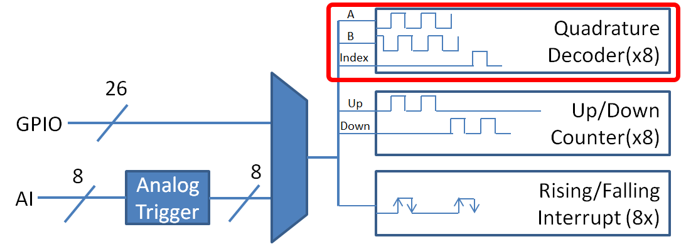

Encoders - Software
Note
This section covers encoders in software. For a hardware guide to encoders, see Encoders - Hardware.
Encoders are devices used to measure motion (usually, the rotation of a shaft).
Important
The classes in this document are only used for encoders that are plugged directly into the roboRIO! Please reference the appropriate vendors’ documentation for using encoders plugged into motor controllers.
Quadrature Encoders - The Encoder Class
WPILib provides support for quadrature encoders through the Encoder class (Java, C++). This class provides a simple API for configuring and reading data from encoders.
These encoders produce square-wave signals on two channels that are a quarter-period out-of-phase (hence the term, “quadrature”). The pulses are used to measure the rotation, and the direction of motion can be determined from which channel “leads” the other.
The FPGA handles quadrature encoders either through a counter module or an encoder module, depending on the decoding type - the choice is handled automatically by WPILib. The FPGA contains 8 encoder modules.
Examples of quadrature encoders:
AMT103-V available through FIRST Choice
Initializing a Quadrature Encoder
A quadrature encoder can be instantiated as follows:
// Initializes an encoder on DIO pins 0 and 1
// Defaults to 4X decoding and non-inverted
Encoder encoder = new Encoder(0, 1);
// Initializes an encoder on DIO pins 0 and 1
// Defaults to 4X decoding and non-inverted
frc::Encoder encoder{0, 1};
Decoding Type
The WPILib Encoder class can decode encoder signals in three different modes:
1X Decoding: Increments the distance for every complete period of the encoder signal (once per four edges).
2X Decoding: Increments the distance for every half-period of the encoder signal (once per two edges).
4X Decoding: Increments the distance for every edge of the encoder signal (four times per period).
4X decoding offers the greatest precision, but at the potential cost of increased “jitter” in rate measurements. To use a different decoding type, use the following constructor:
// Initializes an encoder on DIO pins 0 and 1
// 2X encoding and non-inverted
Encoder encoder = new Encoder(0, 1, false, Encoder.EncodingType.k2X);
// Initializes an encoder on DIO pins 0 and 1
// 2X encoding and non-inverted
frc::Encoder encoder{0, 1, false, frc::Encoder::EncodingType::k2X};
Configuring Quadrature Encoder Parameters
Note
The Encoder class does not make any assumptions about units of distance; it will return values in whatever units were used to calculate the distance-per-pulse value. Users thus have complete control over the distance units used. However, units of time are always in seconds.
Note
The number of pulses used in the distance-per-pulse calculation does not depend on the decoding type - each “pulse” should always be considered to be a full cycle (four edges).
The Encoder class offers a number of configuration methods:
// Configures the encoder to return a distance of 4 for every 256 pulses
// Also changes the units of getRate
encoder.setDistancePerPulse(4.0/256.0);
// Configures the encoder to consider itself stopped after .1 seconds
encoder.setMaxPeriod(0.1);
// Configures the encoder to consider itself stopped when its rate is below 10
encoder.setMinRate(10);
// Reverses the direction of the encoder
encoder.setReverseDirection(true);
// Configures an encoder to average its period measurement over 5 samples
// Can be between 1 and 127 samples
encoder.setSamplesToAverage(5);
// Configures the encoder to return a distance of 4 for every 256 pulses
// Also changes the units of getRate
encoder.SetDistancePerPulse(4.0/256.0);
// Configures the encoder to consider itself stopped after .1 seconds
encoder.SetMaxPeriod(0.1);
// Configures the encoder to consider itself stopped when its rate is below 10
encoder.SetMinRate(10);
// Reverses the direction of the encoder
encoder.SetReverseDirection(true);
// Configures an encoder to average its period measurement over 5 samples
// Can be between 1 and 127 samples
encoder.SetSamplesToAverage(5);
Reading information from Quadrature Encoders
The Encoder class provides a wealth of information to the user about the motion of the encoder.
Distance
Note
Quadrature encoders measure relative distance, not absolute; the distance value returned will depend on the position of the encoder when the robot was turned on or the encoder value was last reset.
Users can obtain the total distance traveled by the encoder with the getDistance() method:
// Gets the distance traveled
encoder.getDistance();
// Gets the distance traveled
encoder.GetDistance();
Rate
Note
Units of time for the Encoder class are always in seconds.
Users can obtain the current rate of change of the encoder with the getRate() method:
// Gets the current rate of the encoder
encoder.getRate();
// Gets the current rate of the encoder
encoder.GetRate();
Stopped
Users can obtain whether the encoder is stationary with the getStopped() method:
// Gets whether the encoder is stopped
encoder.getStopped();
// Gets whether the encoder is stopped
encoder.GetStopped();
Direction
Users can obtain the direction in which the encoder last moved with the getDirection() method:
// Gets the last direction in which the encoder moved
encoder.getDirection();
// Gets the last direction in which the encoder moved
encoder.GetDirection();
Period
Users can obtain the period of the encoder pulses (in seconds) with the getPeriod() method:
// Gets the current period of the encoder
encoder.getPeriod();
// Gets the current period of the encoder
encoder.GetPeriod();
Resetting a Quadrature Encoder
To reset a quadrature encoder to a distance reading of zero, call the reset() method. This is useful for ensuring that the measured distance corresponds to the actual desired physical measurement, and is often called during a homing routine:
// Resets the encoder to read a distance of zero
encoder.reset();
// Resets the encoder to read a distance of zero
encoder.Reset();
Duty Cycle Encoders - The DutyCycleEncoder class
WPILib provides support for duty cycle (also marketed as PWM) encoders through the DutyCycleEncoder class (Java, C++). This class provides a simple API for configuring and reading data from duty cycle encoders.
The roboRIO’s FPGA handles duty cycle encoders automatically.
Examples of duty cycle encoders:
Initializing a Duty Cycle Encoder
A duty cycle encoder can be instantiated as follows:
// Initializes a duty cycle encoder on DIO pins 0
DutyCycleEncoder encoder = new DutyCycleEncoder(0);
// Initializes a duty cycle encoder on DIO pins 0
frc::DutyCycleEncoder encoder{0};
Configuring Duty Cycle Encoder Parameters
Note
The DutyCycleEncoder class does not make any assumptions about units of distance; it will return values in whatever units were used to calculate the distance-per-rotation value. Users thus have complete control over the distance units used.
The DutyCycleEncoder class offers a number of configuration methods:
// Configures the encoder to return a distance of 4 for every rotation
encoder.setDistancePerRotation(4.0);
// Configures the encoder to return a distance of 4 for every rotation
encoder.SetDistancePerRotation(4.0);
Reading Distance from Duty Cycle Encoders
Note
Duty Cycle encoders measure absolute distance. It does not depend on the starting position of the encoder.
Users can obtain the distance measured by the encoder with the getDistance() method:
// Gets the distance traveled
encoder.getDistance();
// Gets the distance traveled
encoder.GetDistance();
Detecting a Duty Cycle Encoder is Connected
As duty cycle encoders output a continuous set of pulses, it is possible to detect that the encoder has been unplugged.
// Gets if the encoder is connected
encoder.isConnected();
// Gets if the encoder is connected
encoder.IsConnected();
Resetting a Duty Cycle Encoder
To reset an encoder so the current distance is 0, call the reset() method. This is useful for ensuring that the measured distance corresponds to the actual desired physical measurement. Unlike quadrature encoders, duty cycle encoders don’t need to be homed. However, after reset, the position offset can be stored to be set when the program starts so that the reset doesn’t have to be performed again. The Preferences class provides a method to save and retrieve the values on the roboRIO.
// Resets the encoder to read a distance of zero at the current position
encoder.reset();
// get the position offset from when the encoder was reset
encoder.getPositionOffset();
// set the position offset to half a rotation
encoder.setPositionOffset(0.5);
// Resets the encoder to read a distance of zero at the current position
encoder.Reset();
// get the position offset from when the encoder was reset
encoder.GetPositionOffset();
// set the position offset to half a rotation
encoder.SetPositionOffset(0.5);
Analog Encoders - The AnalogEncoder Class
WPILib provides support for analog absolute encoders through the AnalogEncoder class (Java, C++). This class provides a simple API for configuring and reading data from duty cycle encoders.
Examples of analog encoders:
Initializing an Analog Encoder
An analog encoder can be instantiated as follows:
// Initializes a duty cycle encoder on Analog Input pins 0
AnalogEncoder encoder = new AnalogEncoder(0);
// Initializes a duty cycle encoder on DIO pins 0
frc::AnalogEncoder encoder{0};
Configuring Analog Encoder Parameters
Note
The AnalogEncoder class does not make any assumptions about units of distance; it will return values in whatever units were used to calculate the distance-per-rotation value. Users thus have complete control over the distance units used.
The AnalogEncoder class offers a number of configuration methods:
// Configures the encoder to return a distance of 4 for every rotation
encoder.setDistancePerRotation(4.0);
// Configures the encoder to return a distance of 4 for every rotation
encoder.SetDistancePerRotation(4.0);
Reading Distance from Analog Encoders
Note
Analog encoders measure absolute distance. It does not depend on the starting position of the encoder.
Users can obtain the distance measured by the encoder with the getDistance() method:
// Gets the distance measured
encoder.getDistance();
// Gets the distance measured
encoder.GetDistance();
Resetting an Analog Encoder
To reset an analog encoder so the current distance is 0, call the reset() method. This is useful for ensuring that the measured distance corresponds to the actual desired physical measurement. Unlike quadrature encoders, duty cycle encoders don’t need to be homed. However, after reset, the position offset can be stored to be set when the program starts so that the reset doesn’t have to be performed again. The Preferences class provides a method to save and retrieve the values on the roboRIO.
// Resets the encoder to read a distance of zero at the current position
encoder.reset();
// get the position offset from when the encoder was reset
encoder.getPositionOffset();
// set the position offset to half a rotation
encoder.setPositionOffset(0.5);
// Resets the encoder to read a distance of zero at the current position
encoder.Reset();
// get the position offset from when the encoder was reset
encoder.GetPositionOffset();
// set the position offset to half a rotation
encoder.SetPositionOffset(0.5);
Using Encoders in Code
Encoders are some of the most useful sensors in FRC®; they are very nearly a requirement to make a robot capable of nontrivially-automated actuations and movement. The potential applications of encoders in robot code are too numerous to summarize fully here, but an example is provided below:
Driving to a Distance
Encoders can be used on a robot drive to create a simple “drive to distance” routine. This is useful in autonomous mode, but has the disadvantage that the robot’s momentum will cause it to overshoot the intended distance. Better methods include using a PID Controller or using Path Planning
Note
The following example uses the Encoder class, but is similar if other DutyCycleEncoder or AnalogEncoder is used. However, quadrature encoders are typically better suited for drivetrains since they roll over many times and don’t have an absolute position.
// Creates an encoder on DIO ports 0 and 1
Encoder encoder = new Encoder(0, 1);
// Initialize motor controllers and drive
Spark left1 = new Spark(0);
Spark left2 = new Spark(1);
Spark right1 = new Spark(2);
Spark right2 = new Spark(3);
MotorControllerGroup leftMotors = new MotorControllerGroup(left1, left2);
MotorControllerGroup rightMotors = new MotorControllerGroup(right1, right2);
DifferentialDrive drive = new DifferentialDrive(leftMotors, rightMotors);
@Override
public void robotInit() {
// Configures the encoder's distance-per-pulse
// The robot moves forward 1 foot per encoder rotation
// There are 256 pulses per encoder rotation
encoder.setDistancePerPulse(1./256.);
}
@Override
public void autonomousPeriodic() {
// Drives forward at half speed until the robot has moved 5 feet, then stops:
if(encoder.getDistance() < 5) {
drive.tankDrive(0.5, 0.5);
} else {
drive.tankDrive(0, 0);
}
}
// Creates an encoder on DIO ports 0 and 1.
frc::Encoder encoder{0, 1};
// Initialize motor controllers and drive
frc::Spark left1{0};
frc::Spark left2{1};
frc::Spark right1{2};
frc::Spark right2{3};
frc::MotorControllerGroup leftMotors{left1, left2};
frc::MotorControllerGroup rightMotors{right1, right2};
frc::DifferentialDrive drive{leftMotors, rightMotors};
void Robot::RobotInit() {
// Configures the encoder's distance-per-pulse
// The robot moves forward 1 foot per encoder rotation
// There are 256 pulses per encoder rotation
encoder.SetDistancePerPulse(1.0/256.0);
}
void Robot:AutonomousPeriodic() {
// Drives forward at half speed until the robot has moved 5 feet, then stops:
if(encoder.GetDistance() < 5) {
drive.TankDrive(0.5, 0.5);
} else {
drive.TankDrive(0, 0);
}
}
Homing a Mechanism
Since quadrature encoders measure relative distance, it is often important to ensure that their “zero-point” is in the right place. A typical way to do this is a “homing routine,” in which a mechanism is moved until it hits a known position (usually accomplished with a limit switch), or “home,” and then the encoder is reset. The following code provides a basic example:
Note
Homing is not necessary for absolute encoders like duty cycle encoders and analog encoders.
Encoder encoder = new Encoder(0, 1);
Spark spark = new Spark(0);
// Limit switch on DIO 2
DigitalInput limit = new DigitalInput(2);
public void autonomousPeriodic() {
// Runs the motor backwards at half speed until the limit switch is pressed
// then turn off the motor and reset the encoder
if(!limit.get()) {
spark.set(-0.5);
} else {
spark.set(0);
encoder.reset();
}
}
frc::Encoder encoder{0,1};
frc::Spark spark{0};
// Limit switch on DIO 2
frc::DigitalInput limit{2};
void AutonomousPeriodic() {
// Runs the motor backwards at half speed until the limit switch is pressed
// then turn off the motor and reset the encoder
if(!limit.Get()) {
spark.Set(-0.5);
} else {
spark.Set(0);
encoder.Reset();
}
}